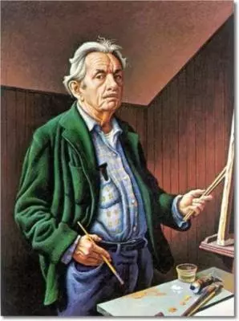
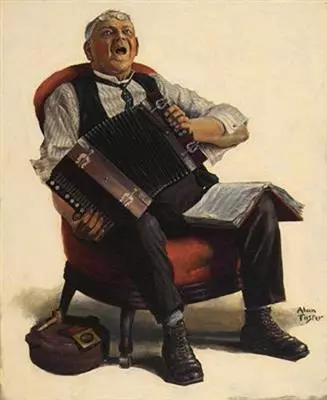

Story
A movement in American art that focused on local and representational subjects. Regionalism was the dominant style of American art in the 1930s and into the 1940s, often depicting scenes from the rural Midwest, American folklore, or the hard times of the Great Depression. Thomas Hart Benton, John Steuart Curry and Grant Wood, all from the Midwest, are the artists most often associated with regionalism.
In some formulations, however, the work of Stuart Davis and Edward Hopper could also be considered "regionalist" because they painted during the same time period and drew on local sources for subject matter, although in their case the focus is on urban life. In this light, regionalism can be seen as an artist's desire to connect to their environment rather than universal themes (as was often the case with abstraction).
Timeline
1889

Thomas Hart Benton
1892

Alan Stephens Foster
1893
Charles E.Burchfield